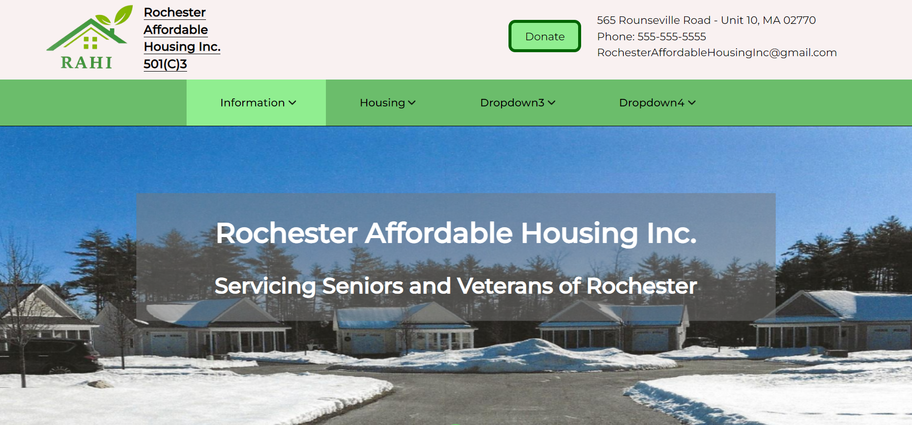
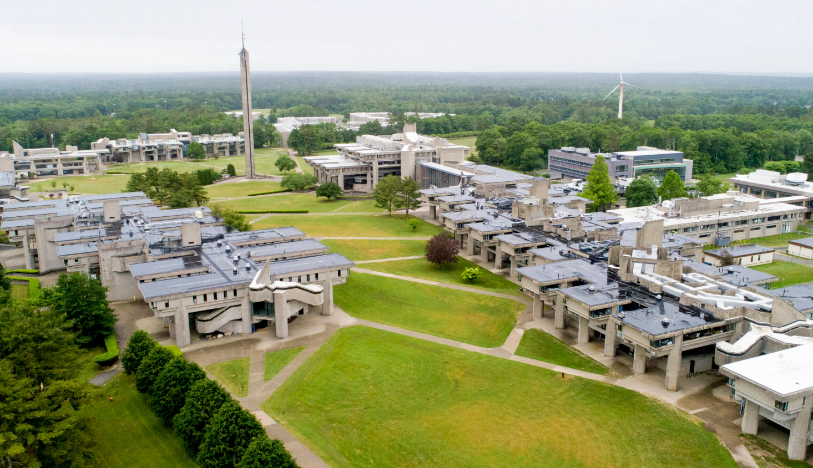

Trevor St. Amand's Portfolio
As a graduate of the Old Colony RVTHS computer science shop, I have four years of programming, website design, video game design, and cybersecurity knowledge, as well as two computer science AP tests under my belt. After placing second in the SkillsUSA district programming competition I am confident in my abilities in the computer science field.
At this point in my career, I have been deeply involved in and heavily contributed to the development of two websites: one for a non-profit organization and another for the Old Colony PTO. Working on these websites allowed me to demonstrate and reinforce my skills in HTML and CSS while giving back to my school and community. Both websites were used to advertise, allowing the organizations to reach more people and impact more lives.
After being admitted to UMass Dartmouth and entering their honors college program, I plan to pursue a bachelor's degree in computer science. With my degree, I hope to get a job as a programmer, as I find great satisfaction in creating complex computer programs.
